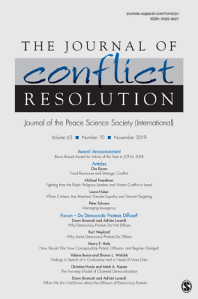
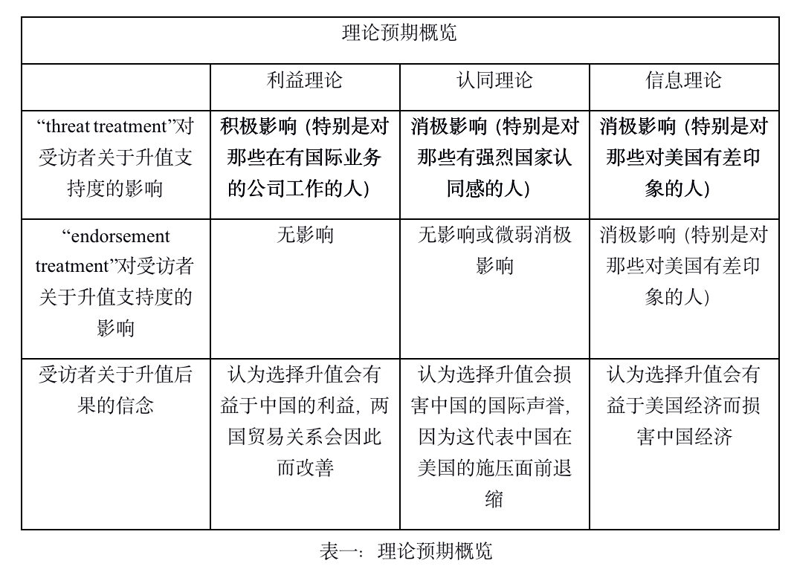
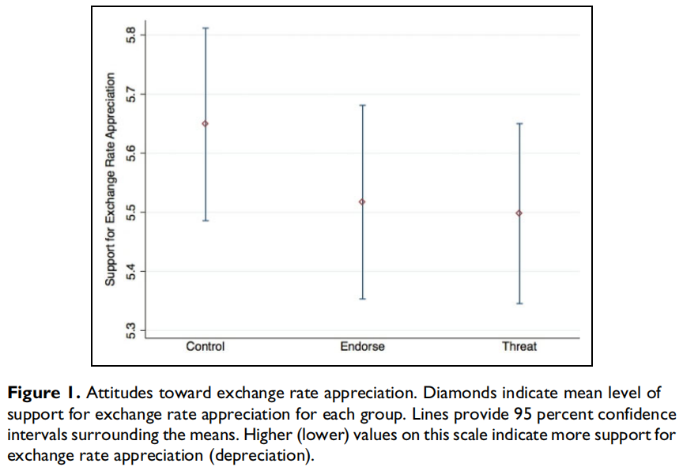
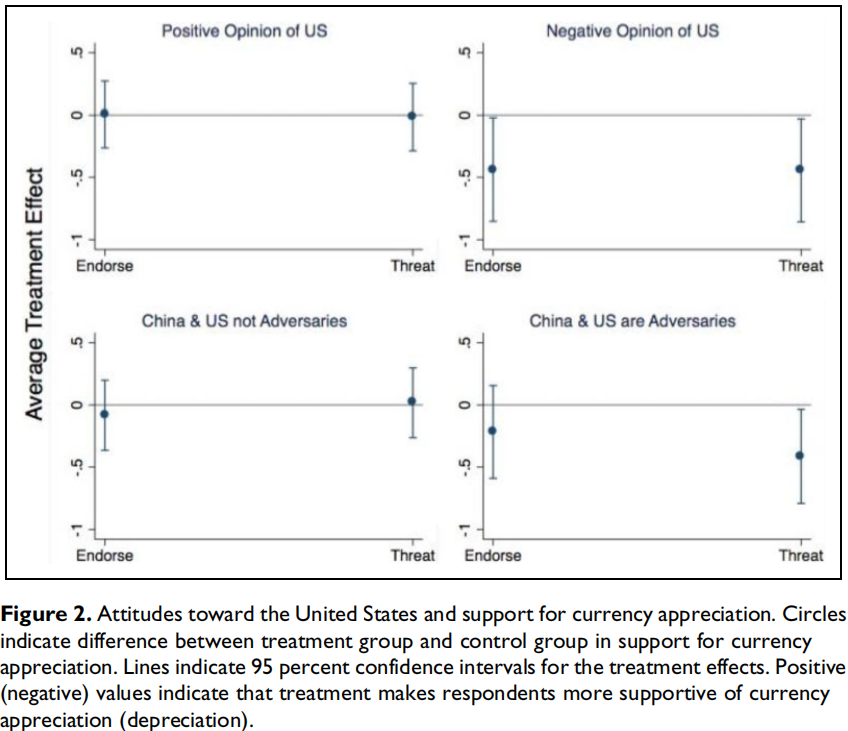
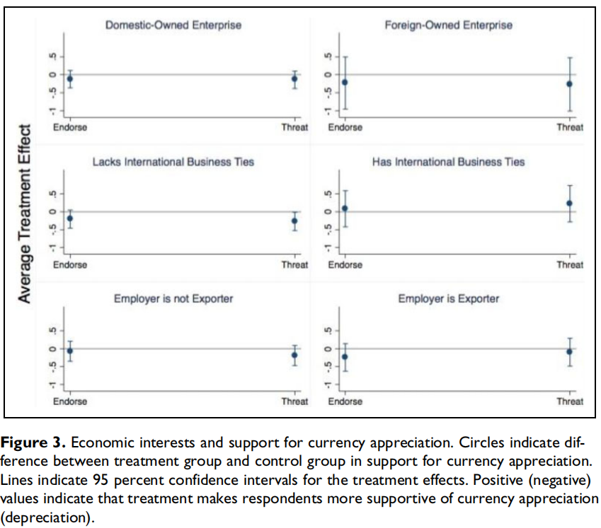
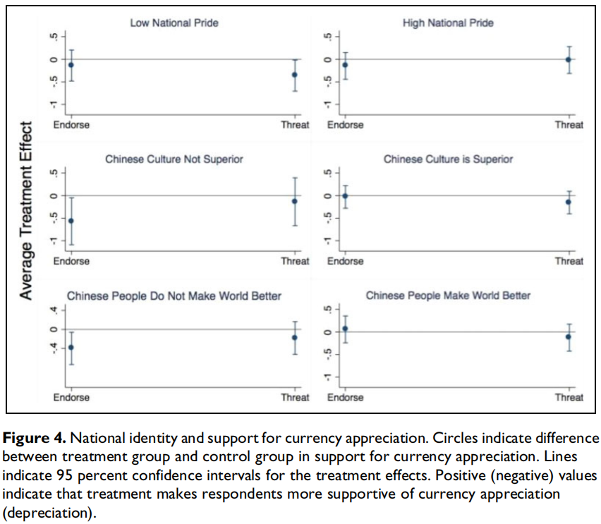
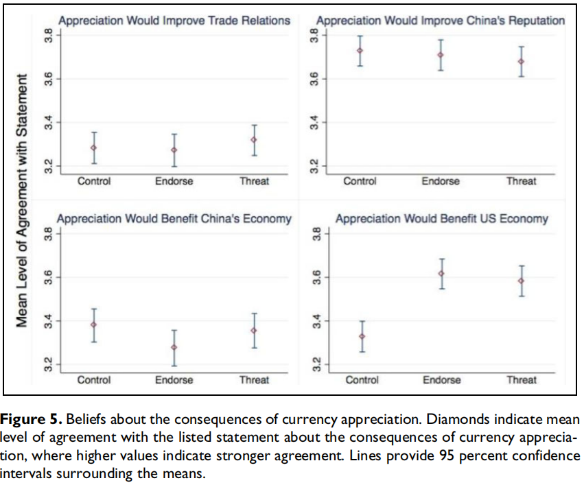
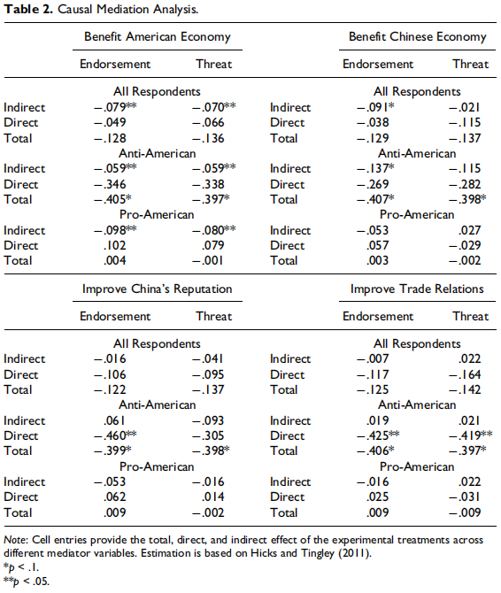

收录于合集

作品简介
【作者】 Dimitar Gueorguiev，雪城大学政治学助理教授，研究领域为比较政治学、威权制度、国家治理和调查方法。
Daniel McDowell，雪城大学政治学副教授，主要研究领域为美国、IMF和中国的货币与财政政策。
David A. Steinberg，约翰霍普金斯大学国际政治经济学副教授，主要研究方向为国际货币与金融政治。
**** 【编译】 徐垚晟（加州大学圣迭戈分校国际事务专业硕士生）
【校对】 金琳
【审核】 蔡宇
【排版】 梁鑫昱
【来源】 Gueorguiev, D., McDowell, D., & Steinberg, D. A. (2020). “The Impact of Economic Coercion on Public Opinion: The Case of US–China Currency Relations.” Journal of Conflict Resolution. https://doi.org/10.1177/0022002720912323

期刊简介

_ Journal of Conflict Resolution_《冲突解决杂志》是一本融合了社会科学理论和人类冲突研究的跨学科杂志。JCR着眼于国家之间和国家内部的冲突，但也探索各种可能有助于理解战争与和平问题的群体间和人际冲突。根据2018年Journal Citation Reports显示，其影响因子为2.471。
外部威胁对公众舆论的影响：以中美汇率之争为例
The Impact of Economic Coercion on Public Opinion: The Case of US—China Currency Relations
内容提要
近年来，美国通过威胁惩罚的方式，试图改变其他国家的经济政策。为了更好地理解这一策略的政治后果， 本文研究了外部威胁如何影响目标国家公众对政策变化的支持度 。作者认为，外部威胁可能通过三种机制改变公众舆论：改变个人利益、激发其国家认同感以及为公众提供有关政策所产生的分配效应的最新信息。为了检验这些解释，利用对中国网民的调查实验数据，作者发现信息更新理论（Informational Updating Theory）得到了强有力的支持。 证据表明，外部威胁会减少公众对改变政策的支持，因为这会导致公众不断更新经济政策变化中谁赢谁输的观念。
文章导读
本文检验了关于公众如何回应外部威胁的三种理论。以利益为主导的国际政治经济学（IPE）方法假定个人根据经济成本和收益来评估政策。由于威胁会增加维持现状政策的经济成本，因此“利益”理论预期外部威胁将使公众更加支持按照对方国家的意图来改变政策。另一方面，社会认同理论表明，外部威胁破坏了人们对经济政策变革的支持度，因为它引起了拥有国家认同感的人们的强烈反对。第三种解释是信息理论（Information），同样预期外部威胁会引起公众的强烈反对，但是基于不同的原因：外部威胁强化了人们的一些观念，即政策变化将对外国有利而对本国不利。
01
研究设计
为了检验利益、认同和信息理论，作者在中国进行了一项调查实验，询问公众两个问题，一个是支持人民币升值还是贬值，另一个是对人民币升值的看法。作者将受访者分为三个实验组，每个实验组所接收到的信息和类型都是不同的。第一组的受访者 不会接收到关于美国向中国施压的信息 ，即后文中出现的对照组(control group)，；第二组的受访者 接收到了美国向中国施压的信息 ，即后文中出现的threat treatment，意味着如果人民币不升值，那么美国将向中国的出口商品加征关税；第三组的受访者接收到了美国支持人民币升值的信息，即后文中出现的endorsement treatment，意味着 信息中提及美国希望人民币升值，但没有提及美国对中国施压 。
接着，作者根据利益、认同和信息理论,分别对调查实验如何影响受访者对人民币升值的支持度和受访者关于升值后果的观念做出了独特的预期判断（见表一）。

02
数据描述
本文所使用的数据来自作者于2017年2月对中国公众进行的在线调查。在该时间节点，中国媒体对关汇率政策的讨论很少涉及美国施压。因此，其中一个实验组，即受访者未接收到关于美国立场的信息，并不太可能本身具备相关的信息。作者共获得了来自中国全国各地的2500多名受访者的回答。在对调查数据进行处理时，作者删除了所有在不到五分钟的时间内完成调查的数据，因为以这种速度完成调查的受访者可能对问题的理解较为有限。
在调查问卷设计方面，第一部分是询问受访者，他们认为中国是应该让人民币升值还是贬值，变量范围从0到10，值越高（值越低）表示对升值（贬值）的支持越多。第二部分是一系列问题，询问了受访者对人民币升值的预期后果。一共有四个问题，受访者是否认为人民币升值会（1）帮助中国避免与美国的贸易紧张局势;（2）对美国经济有利;（3）对中国经济有利;（4）有利于中国在国际上的声誉。针对这四个问题，受访者可以从李克特量表(Likert scale)的五个类别中选择一个，范围从“强烈同意”到“强烈不同意”。
通过Randomization checks，表明三个实验组在观察上是等效的。因此，作者将分析重点放在三个实验组之间的均值差异（difference-in- means）比较上。
03
数据分析

图1
图1呈现了三个实验组偏好（升值/贬值问题）的平均值以及95％的置信区间。可以看出，“endorsement treatment”和“threat treatment”的均值都低于对照组的，这表明受访者对贬值的偏好更强，但是三组均值之间的差异相对较小，并且在统计意义上也不显著。因此， 对于整个样本来说，“endorsement treatment”和“threat treatment”并没有对受访者偏好产生强烈的影响, 但可能会影响某些更细分的人群的偏好，接下来的部分将评估这种可能性。
（一）基于信息理论的分析

图2
基于信息理论，作者假设“endorsement treatment”和“threat treatment”更可能减少那些对美国持消极看法或将美国视为敌人的人对人民币升值的支持。
为了检验这一假设，作者使用普通最小二乘法（OLS）对这两种treatment分别进行了回归。图2呈现出了回归的结果。左上图和左下图显示，对于对美国持中立或积极态度，亦或是未将美国视为敌人的受访者，这两种“treatment”对汇率政策偏好几乎没有影响。但是，右上图和右下图显示，对于对美国持消极态度，亦或是将美国视为敌人的受访者，两种“treatment”都使人民币升值的平均支持度降低了近半个百分点。
（二）基于利益理论的分析

图3
基于利益理论，作者假设美国的施压会使那些最有可能遭到外国贸易报复的人增加对人民币升值的支持。作者通过问题的设计来确定几个能够反映个人对贸易政策敏感度的变量，比如是否在外资企业工作、所在公司是否有国际业务等等。
但是与利益理论的预期相反，根据图3， 从事与国际业务相关的个人对外部威胁的反应与其他人群没有任何不同 。第一组（最上面的两张图）区分了国内业务导向公司和国际业务导向公司，结果表明，两者在统计学意义上都是不显著的。第二组（中间的两张图）区分了是否具备国际业务联系的企业。结果表明，在没有任何国际业务联系的企业工作的受访者对“threat treatment”持负面态度，并且在统计学意义上是显著的。但是该因素影响过小，以至于没有太多的价值。第三组（最下面的两张图）区分了公司是否为出口导向型企业，但是结果表明，两者在统计学意义上都是不显著的。
（三）基于认同理论的分析

图4
基于认同理论，作者假设外部威胁很有可能会减少那些怀有强烈国家认同的人对人民币升值的支持度。为了检验这一假设，作者使用了先前对国际经济政策态度的研究中使用过的三种衡量国家认同感的标准（Mansfield and Mutz 2009）。如图4所示，在三组分类中，针对国家认同感较高的人群，“endorsement treatment”和“threat treatment”都在统计学意义上为不显著。
但是有证据表明， 在国家认同感较低的受访者中，两种“treatment”在统计学上具有显著的负面影响 ，这与假设背道而驰。
04
因果机 制
（一）外部威胁对受访者关于人民币升值观念的影响
本文所应用的三个理论都表明，外部威胁会通过改变人们对政策变化的观念来影响偏好。在本节中， 作者研究外部威胁如何影响人们对政策变化后果的看法 。图5给出了受访者对四个问题的回应均值（the mean responses）（95%置信度区间），这四个问题询问了受访者对汇率升值预期结果的看法。

图5
在图5的左上角，可以看到“endorsement treatment”和“threat treatment”对受访者关于人民币升值是否有助于避免贸易战的看法影响有限。同样，右上方的图表明， 两种“treatment”并不影响人们对升值是否有利于中国的国际声誉的看法 。
基于信息理论，作者假设两种“treatment”能改变受访者对两个问题的看法：一是中国是否受益于人民币升值；二是美国是否受益于人民币升值。根据图五左下方的图，对照组和“threat treatment”的回应均值相似，分别为3.38和3.35。然而，“endorsement treatment”的回应均值（3.27）略低于对照组，在0.1水平上（P value = 0.07）具备显著性差异。“endorsement treatment”和“threat treatment”的差异在0.1水平上（P value = 0.17）不具备显著性差异。这些结果表明，“endorsement treatment”会使得受访者认为政策变化（人民币升值）会损害中国的利益。
最显著的差异出现在图5的右下图表，它显示了受访者对人民币升值是否有利于美国经济的看法。对照组的回应均值（3.33）明显低于“endorsement treatment”（3.62）和“threat treatment”（3.58）。对照组和两种“treatment”的均值差异分别是显著的（P value < 0.01）。两种treatment之间的均值差异则不显著。
这一证据表明，美国施压确实会影响中国公众对政策变化（人民币升值）的认知。作者发现，外国的宣传会减少人们对一项政策有益于母国经济的看法，并且这种宣传会使人们产生一种外国会从政策变化中受益的看法。 “endorsement treatment”和“treat treatment”强化了人们关于外国会受益于本国政策变化的看法，这有力地支持了信息理论 。
（二）因果中介效应分析
最后，作者检验了在上一节中所观察到的观念变化是否是重要的机制，通过这些机制，两种“treatment”会影响受访者的偏好。作者使用因果中介效应分析法（causal mediation methods）来检验所使用的四个观念变量是否调节了两种“treatment”与受访者关于人民币汇率偏好之间的关系。这种方法将“treatment”的“总效应”分为两个部分。“间接效应”是指由中介变量（本文是指四个观念变量）解释的效应，“直接效应”是由所有其他因素所产生的效应。

表2
表2给出了基于四个可能的中介变量分类的四个模型。另外还提供了完整样本、反美子样本和亲美子样本的中介分析结果。这样做的原因是因为上一节中的结果显示受访者对美国的态度是重要的中介变量。
首先看完整样本的结果。根据先前的结果，作者发现两个“treatment”都会使支持人民币升值的总体水平降低约0.13，但是这种总体效果在统计学意义上并不显著。但是，重要的是，受访者关于美国经济是否受益于人民币升值的观念这一中介变量对两种“treatment”来说都是统计学意义上的显著，这种间接影响大约是总影响的一半。这意味着 两种“treatment”都使得受访者产生了“人民币升值对美国经济有利”的观念。这一观念进而导致受访者对人民币升值的支持度降低。 作者还发现，受访者关于人民币升值会损害中国经济的观念这一中介变量对于“endorsement treatment”是统计学意义上的显著（P value < 0.1）。另外两个中介变量则只有很小的间接效应，并且在统计学意义上不显著。因此就整个样本而言，两种“treatment”会通过改变人们对哪个国家可能会从政策变化中受益的观念而降低受访者对人民币升值的支持度。
另外毫不奇怪的是，对那些对美国持负面观感的受访者而言，美国经济会受益于人民币升值的观念是一个重要的中介变量。但有趣的是，在对美国持正面观感的受访者中，认为美国经济受益于人民币升值的观念也具有类似的显著的间接效应。
相反的是，亲美和反美之间最大的区别在于其对人民币升值对中国经济的影响的看法不同。对美国持负面观感的受访者相比对美国持正面观感的受访者，认为人民币升值对中国不利的看法将产生更大的间接效应。
这些中介效应模型的结果有助于我们理解，为什么外部威胁对人们偏好的影响，会因为人们对外国的看法的不同而不同。 两种“treatment”使两组受访者都更新了“美国是否会从人民币升值中受益”的观念。 在反美分组中存在更大的总体效应，这是因为外部威胁导致这些受访者认为人民币升值会损害中国经济，这一发现与信息更新理论相符。相反的是，外部威胁并不能使对美国抱有好感的受访者认为政策变化会损害本国经济，这很可能是因为他们不太以零和思维看待双边关系。
05
结论
本文作者以中美货币关系为例，检验了外部威胁对公众舆论影响的三种理论。开放经济政治学（open-economy politics）作为国际政治经济学中的前沿方法，认为个人经济利益（由其所从事的行业等变量决定）会影响人们对外国经济政策的偏好。因此，当一国的贸易伙伴威胁要对本国征收关税时，这种方法将期望公众（尤其是工作于具有跨国业务的人们）更加支持汇率升值。但是，调查数据的研究不支持这一假设。美国施压并没有使任何一类受访者显著地支持汇率升值，包括那些从事与贸易有关工作的人。
第二种方法即认同理论，认为公众对外部威胁的回应不是基于个人利益，而是基于个人认同。如果是这样，外部威胁将减少受访者对政策变化的支持，而且这一影响的大小程度应根据个人的国家认同感的程度而有所不同。本文为这一论点提供了证据支持。作者发现，国家认同感低的受访者在得知外部威胁后变得更反对汇率升值，这与该理论的某些变体是一致的（尽管与作者最初的预期相反）。另一方面证据表明，“endorsement treatment”不太可能引起国家认同感高的受访者的强烈反对，但对公众舆论的影响与“threat treatment”类似，这表明认同理论的解释力是部分有效的。
作者所发现的证据有力地支持了信息更新理论。该理论认为，外部威胁会减少人们对国家经济政策变化的支持度，因为这些威胁导致该国公众推断出政策变化会以损害本国利益为代价使对方国家受益。美国的“threat treatment”和“endorsement treatment”产生了类似的效果，使中国人相信人民币升值使美国受益。中介效应分析表明，这一观念是减少人们对人民币升值支持度的重要中介变量。此外，美国的施压也增加了对美国持负面观感的受访者认为升值对中国不利的程度。这有助于解释为什么该类人群对外部压力产生特别强烈的负面反应。总而言之证据表明，外部威胁使人们意识到政策改革将使外国受益而损害本国利益，这削弱了该国部分人群对的政策变革的支持度。
本文由国政学人独家编译推荐，文章观点不代表本平台观点，转载请联系授权。

添加 “国小政”微信，获取最新资讯


好好学习，天天“在看”
国政学人
支持学术公益与知识传播
微信扫一扫赞赏作者 __赞赏
已喜欢，对作者说句悄悄话
取消 __
发送给作者
发送
最多40字，当前共字
上一页 1/3 下一页
长按二维码向我转账
支持学术公益与知识传播
受苹果公司新规定影响，微信 iOS 版的赞赏功能被关闭，可通过二维码转账支持公众号。